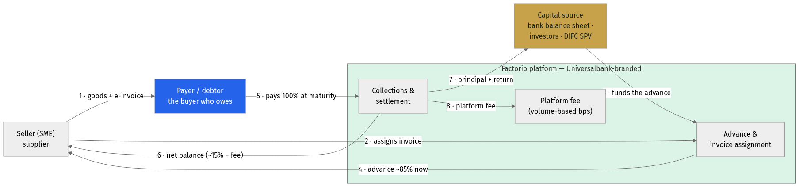
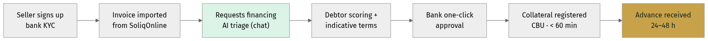
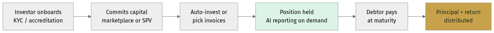
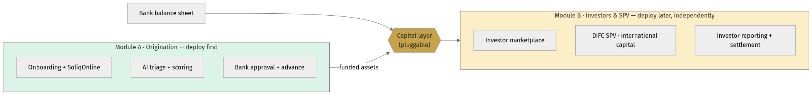
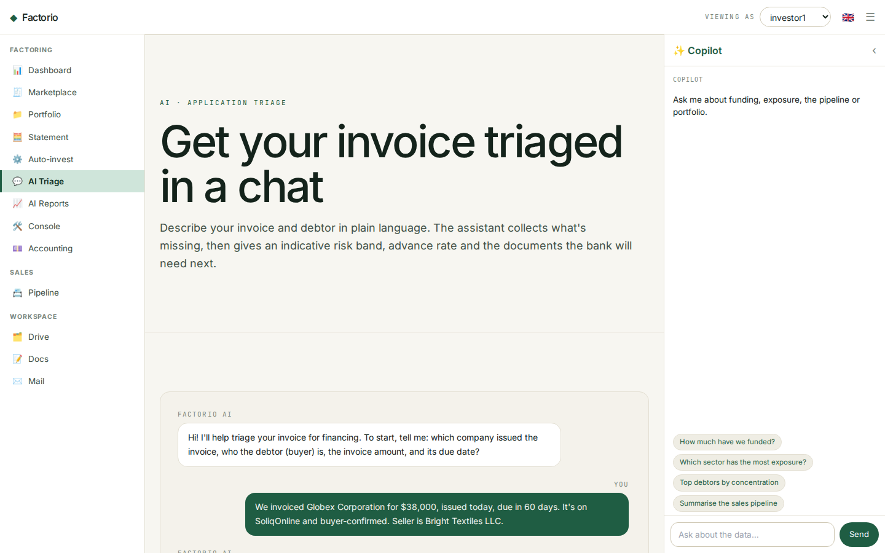

Factorio for Universalbank
AI-native invoice financing · an international-investor SPV · UAE entry
Prepared by Consistente Ltd · Tallinn · info@consistente.tech · consistente.tech
A proposal by Consistente Ltd to build and operate a next-generation, white-label invoice-financing platform for Universalbank — more efficient than the incumbent, priced on volume alone, with an AI core, an international-investor SPV, and a route into the UAE.
Executive summary
Three moves, one platform
- The gap. Every Uzbek bank rents its factoring product from OzPlanet or FinMakon — Universalbank included (OzPlanet cooperation agreement, Sept 2024). None owns the product, the customer relationship or the data.
- 1 · Own the platform. A white-label, AI-native platform Universalbank runs under its own brand — the bank owns the product, customers and data — priced on financed volume only.
- 2 · International capital. An SPV module lets global — and specifically Gulf — investors fund Uzbek receivables. OzPlanet and FinMakon take no foreign or retail money, so this is a clean, uncontested differentiator.
- 3 · UAE entry. A DIFC SPV and a phased Shariah programme (Murabaha → Wakala → Sukuk) to reach Dubai / DIFC Islamic capital.
- Decomposable & live today. Deploy origination first, add the investor / SPV layer later — and the chat-based loan triage and investor reporting are already running in the app.
The opportunity
Uzbekistan built the perfect rails for invoice finance
- SoliqOnline — the State Tax Committee's platform — has validated, timestamped and archived every B2B e-invoice in the country since January 2020.
- Didox connects 350,000+ organisations to it and integrates with 1C — a ready-made supplier base that already exchanges invoices electronically.
- Every invoice is government-verified and buyer-confirmed on official record — fraud and debtor-confirmation, factoring's hardest problems, are solved at source.
- The market is scaling fast: the CBU reports ~10.6 trillion soums (~$835M) factored in Jan–Sep 2025, about half of it digital — against a ~$2bn addressable market that is still lightly penetrated.
Why now
The regulatory window is open
- Presidential Decree No. 106 (Aug 2024) mandated banks to offer factoring.
- ZRU-1058 (Apr 2025) amended the Civil Code to give factoring full legal force, and mandates automated API registration of the bank's collateral priority in the CBU registry — within about an hour of approval.
- No new licence is required: Universalbank's existing CBU licence covers this; Factorio operates as white-label technology under the bank's umbrella.
- No Uzbek bank has yet built a production-grade SoliqOnline factoring stack with an AI core — the first mover captures structural advantage.
The incumbents
OzPlanet & FinMakon own the market — as aggregators
| Dimension |
OzPlanet |
FinMakon |
Factorio (Consistente) |
| Model |
Aggregator; bank-set rates |
Aggregator (Didox-backed) |
White-label marketplace — bank owns it |
| Digital share (Q3 2025) |
56% of digital volume |
44% of digital volume |
New entrant — builds share |
| Funding sources |
Banks / MFOs only |
Banks / factoring cos |
Banks + investors + retail + SPV |
| Foreign / retail capital |
No |
No |
Yes — SPV + marketplace |
| Bank owns product & data |
No — OzPlanet does |
No — FinMakon does |
Yes — fully the bank's |
| AI core |
Rule-based; nascent |
Nascent |
Grok chat triage + reporting, doc intelligence |
| Pricing to bank |
Per-transaction commission |
Per-transaction commission |
Volume-only bps (no SaaS licence) |
Universalbank already signed a cooperation agreement with OzPlanet (Sept 2024) — so it knows the model. The point of this proposal is not to rent a better aggregator, but to own the product outright. (Market data: CBU, Q3 2025.)
The strategic gap
No Uzbek bank owns its factoring product
- Today a bank connecting to OzPlanet or FinMakon is a funding partner on someone else's platform — the aggregator owns the brand, the customer relationship and the data.
- That is a strategic dependency: the bank cannot differentiate, cannot cross-sell off its own data, and cannot switch without losing the clients.
- Factorio flips this. Universalbank runs the platform under its own brand, owns all customer and transaction data, and can export and move it — no platform lock-in.
- Same government rails (SoliqOnline, CBU registry), same speed — but the bank owns the asset instead of renting the rails. That ownership is the real product.
How it works
How the money moves — and who gets paid

Money & payment flow — seller, payer (debtor), platform, capital
- The payer (debtor) is the anchor: a specific, buyer-confirmed obligation on the SoliqOnline record.
- The platform advances ~85% now from the capital source (bank, investor or SPV); at maturity the payer settles 100% and the waterfall pays seller, capital and platform.
- Because the flow is identical regardless of who funds it, the capital layer is pluggable — bank first, investors/SPV later.
Pillar 1 · A better platform
AI at the core, not bolted on
- The same end-to-end factoring workflow — submit, verify, fund, settle — but with AI woven through triage, scoring, documents and reporting.
- Built on a lean, server-rendered stack (FastHTML + PostgreSQL) — fast to change, cheap to run, easy to white-label under the bank's brand.
- Trilingual by design (English · Oʻzbekcha · Russian); the AI answers in the user's language.
- The next three slides detail the AI, the credit-scoring engine, and the commercial model.
Journey · Borrower (origination)
The seller's journey — sign-up to cash in 24–48h

Origination: SoliqOnline import → AI triage → one-click approval → advance
- Manual bank involvement is a single approval click on a pre-populated screen; everything else is automated.
- The invoice is imported and verified from SoliqOnline; the debtor is scored; collateral is registered with the CBU in under 60 minutes.
- This is Module A — it stands alone and can go live first, funded entirely by the bank's balance sheet.
Pillar 1 · AI
Two conversational surfaces, one Grok core

Chat-based loan triage and chat-based investor reporting
- Triage turns a seller's plain-language description into an indicative grade, advance rate and document list — in seconds.
- Reporting answers an investor's questions grounded in their own live positions — no invented figures.
- Grok scores and explains; a human always approves. Every AI decision is logged and auditable.
Pillar 1 · Credit scoring
Open-banking-style scoring, Uzbek edition

Plaid-style data fusion adapted to Uzbekistan's rails
- The Plaid model is connect an account, read the cash flows, decide. In Uzbekistan the richest feed is SoliqOnline — verified invoices and tax-declared turnover — plus bank transaction data and the CRIF bureau.
- A model produces the grade, advance rate and price; Grok writes the plain-language rationale and adverse-action reasons.
- Every decision is versioned and reproducible — Consistente's core methodology, and what a regulator will ask for.
Economics
What the bank earns on one invoice
| Cash flow · $10,000 invoice · 85% · 60d · 5% |
Amount |
Direction |
Day |
| Advance to seller (85%) |
$8,500 |
Platform → seller |
Day 1 |
| Payer (debtor) pays in full |
$10,000 |
Payer → collection |
Day 60 |
| Net balance released to seller |
$1,500 |
Platform → seller |
Day 60 |
| Discount income (gross) |
$500 |
Capital keeps |
Day 60 |
| Platform fee (volume-based) |
≈ $13 |
Bank → Consistente |
Day 60 |
| Net income on the invoice |
≈ $487 |
Capital keeps |
Day 60 |
| Annualised return on capital |
≈ 30% p.a. |
— |
— |
Illustrative, per the standard SoliqOnline-verified structure. ~30% annualised on deployed capital compares with 22–28% on unsecured SME lending — at lower risk: the invoice is government-verified, the payer has confirmed the obligation, and the bank holds a registered CBU priority claim. Bank stays profitable to a ~4% default rate.
Pillar 1 · Commercial model
Volume-only pricing — aligned with the bank
| Monthly financed volume |
Platform fee (bps of financed volume) |
| Up to UZS 50 bn |
120 bps |
| UZS 50–200 bn |
90 bps |
| UZS 200–500 bn |
70 bps |
| Over UZS 500 bn |
55 bps |
Illustrative. No SaaS licence, no per-seat, no setup fee — Consistente is paid only when the bank finances an invoice. Options on the table: a revenue-share alternative (a small % of the bank's discount income instead of bps), 12-month bank exclusivity in Uzbekistan, and a Year-3 deferred-equity option structured as new shares (non-dilutive, no board/veto rights). International SPV module: ~60 bps p.a. on invested AUM + a performance share above a hurdle. Final figures to be set with Universalbank.
Pillar 2 · International capital
An SPV that opens Uzbek receivables to the world

Invoice pool → Factorio → DIFC SPV → international investors
- Universalbank remains originator and servicer; a bankruptcy-remote SPV holds the investor-facing interest and channels foreign capital into the invoice pool.
- Two tracks off the same asset base: a conventional note/participation for institutional investors, and Shariah structures for Gulf capital.
- Investors get the same grounded, AI-assisted reporting — in their language — plus statements and a clean audit trail.
Journey · Investor
The investor's journey — onboarding to distribution

Investor: onboard → commit capital → hold with AI reporting → get paid
- Retail, institutional and Gulf investors onboard once (KYC / accreditation), then fund via the marketplace or the SPV.
- They hold positions with on-demand AI portfolio reporting; at maturity, principal + return are distributed automatically.
- This is Module B — it plugs onto the same origination engine later, without changing anything a seller or the bank does.
Delivery · Decomposability
Two modules — buy one, or both, in sequence

Origination (Module A) and Investors/SPV (Module B) are independently deployable
- Module A — Origination can be Universalbank's whole first phase: bank-funded factoring, live in weeks, immediately satisfying the Decree-106 mandate.
- Module B — Investors & SPV adds the marketplace and DIFC/international capital later, over the same engine, with no rework.
- The capital layer is the seam: swap or add funding sources without touching origination — de-risking the programme and the investment.
Pillar 3 · UAE entry
A phased Shariah programme for DIFC capital
| Criterion |
Murabaha SCF |
Wakala Fund |
Sukuk |
Musharaka |
| Shariah purity |
High |
High |
High |
Highest |
| Complexity |
Low |
Low–Med |
High |
Medium |
| Time to market |
Fastest |
Fast |
Slowest |
Medium |
| Dubai investor appeal |
Medium |
High |
Very high |
High |
| Capital per deal |
Small–Med |
Medium |
Large |
Med–Large |
| Regulatory need |
Fatwa only |
Fatwa + fund |
Fatwa + DFSA |
Fatwa + fund |
| Best for |
Pilot |
Family offices |
Institutional |
Strategic partners |
Recommended path: run them in sequence — Murabaha SCF pilot (M6–12) → Wakala fund → Sukuk. Each phase builds the track record that makes the next credible. All require an AAOIFI-accredited fatwa before deployment.
Pillar 3 · Why Dubai / DIFC
The yield spread is the story
- Uzbek factoring yields of ~20–30% p.a. against Gulf Islamic money-market returns of ~4–6% — an exceptional spread for the risk, given SoliqOnline's structural protections.
- Short duration (30–90-day rolling receivables) is rare and highly demanded by Gulf liquidity managers.
- Uzbek receivables are uncorrelated with Gulf real estate, regional equities or oil — genuine diversification.
- DIFC (DFSA) and ADGM (FSRA) both have mature Islamic-finance frameworks and recognise SPV/Sukuk structures; the UAE's Federal Decree-Law No. 50 of 2022 codifies the contracts.
Architecture
One process, AI-native, integration-ready

Target system architecture with AI components highlighted
- A single FastHTML process serves the landing site, the investor app and the AI assistants; PostgreSQL holds the factoring and AI data.
- Clean integration seams to SoliqOnline/Didox, open banking, CRIF, the CBU registry, and the DIFC SPV / custodian.
- Grok (x.ai) is reached over an OpenAI-compatible interface — the model id is configuration, avoiding vendor lock-in.
Proof · Working today
The AI is not a slide — it's shipped

Live chat-based invoice triage in the Factorio app
- A seller describes an invoice in a sentence; the assistant returns an indicative risk band, advance rate and next-document list.
- Built on Grok (x.ai), trilingual, with graceful fallback and full audit logging — the same pattern extends to scoring and reporting.
Delivery
From prototype to regional platform

Phased rollout — each phase funds the next
- Phase 0 (now): AI triage + reporting prototype live.
- Phases 1–2 (M1–6): platform GA, SoliqOnline integration, open-banking scoring, volume pricing.
- Phases 3–4 (M6+): DIFC SPV and first international capital, then the Wakala → Sukuk sequence and regional scale.
Why Consistente
Production AI, delivered consistently
- Consistente Ltd (Tallinn, EU) builds production-grade AI for enterprises — with reproducible pipelines, versioned models and inspectable prompts, not black boxes.
- Precedents across financial services and regulated sectors: LSEG, DBRS Morningstar, ARM, Microsoft.
- Core capabilities map directly onto this project: document intelligence, applied forecasting/scoring, and agentic workflows with human review.
- EU-based, audit-first — the right profile for a bank building AI a regulator will scrutinise.
Next steps
What we propose to do first
- 1. Agree the white-label scope and the volume-based commercial terms.
- 2. Stand up a pilot on live SoliqOnline data; ship the platform GA with the AI triage and scoring engine.
- 3. In parallel, begin DIFC SPV and fatwa preparation so international capital can follow the operating book.
- Contact: Consistente Ltd · info@consistente.tech · consistente.tech